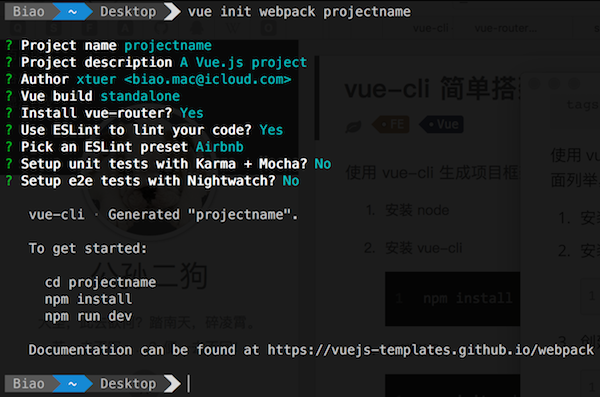

使用 vue-cli 生成项目框架后，一般都会根据自己或则团队的风格微调一些参数。
具体步骤
安装 node
安装 vue-cli
1
npm install -g vue-cli
创建项目:
1
vue init webpack projectname
注意:
- 项目名称不能有大写字母
- ESLint 使用 Airbnb 风格会更严格一些，不过不管使用哪一种，都需要配置 .eslintrc.js 忽略一些编译检查
- 不安装 unit tests 和 e2e tests

安装项目需要的所有插件
1
2cd projectname
npm install支持 SCSS
1
2npm install --save-dev node-sass
npm install --save-dev sass-loader编辑器使用 4 个空格缩进，修改 .editorcong
1
indent_size = 4
ESHint 设置，修改 .eshintrc.js 的 rules，去掉一些严格的检查
1
2
3
4
5
6
7
8
9
10
11
12
13
14
15
16
17
18
19'no-debugger': process.env.NODE_ENV === 'production' ? 'error' : 'off',
'indent': 0,
'no-console': 0,
'no-undef': 0,
'no-alert': 0,
'no-trailing-spaces': 0,
'object-shorthand': 0,
'func-names': 0,
'prefer-arrow-callback': 0,
'space-before-function-paren': 0,
'no-unused-vars': 0,
'comma-dangle': 0,
'import/prefer-default-export': 0,
'no-new': 0,
'no-multi-spaces': 0,
'global-require': 0,
'import/no-dynamic-require': 0,
'no-underscore-dangle': 0,
'array-bracket-spacing': 0我喜欢使用 4 个空格来缩进，Airbnb 默认是 2 个，很多前端的都喜欢使用 2 个进行缩进，为了简单起见，不让空格的个数造成编译时错误，关闭掉它即可。
图片不使用 Base64 的字符串嵌入到网页里，修改 build/webpack.base.conf.js 的
limit为 11
2
3
4
5
6
7
8{
test: /\.(png|jpe?g|gif|svg)(\?.*)?$/,
loader: 'url-loader',
options: {
limit: 1,
name: utils.assetsPath('img/[name].[hash:7].[ext]')
}
}limit 表示图片大小，小于它的图片将使用 Base64 的方式嵌入网页。
修改端口号
默认是 8080，Tomcat 默认也是使用 8080，为了方便开发，修改 config/index.js 中的 dev.port 为 8888
执行
npm run dev命令，开始开发执行
npm run build命令，打包项目项目打包后是静态的网页，为了方便查看效果，可以使用 browser-sync 启动一个 web 服务查看:
- npm install -g browser-sync
- 进入 dist 目录
- browser-sync start –server
主要文件介绍
- main.js: 注册主界面，路由文件等，引入 iview 等其他库
- App.vue: 程序的主界面，其中
<router-view/>是被 component 替换的地方 - router/index.js: 路由文件，注册每个组件的路径(src/components 下 .vue 文件)
- components: 一般自定义页面、组件的 vue 文件放此文件下
新建 component
在 src/components 中创建文件 Foo.vue
1
2
3
4
5
6
7
8
9
10
11
12
13
14
15
16
17
18
19
20
21
22
23
24<template>
<div class="foo">
<span>{{msg}}</span>
</div>
</template>
<script>
export default {
data() {
// name: 'foo', // name 可以不要
return {
msg: 'in component Foo',
};
},
};
</script>
<style lang="scss">
.foo {
span {
color: darkred;
}
}
</style>export 导出一个对象，data() {} 是 ES6 定义类的函数的新方式。
component 一般由 3 个部分组成: template, script, style。
在 src/router/index.js 中注册 component
1
2
3
4
5
6
7
8
9
10
11
12
13
14
15
16
17import Vue from 'vue';
import Router from 'vue-router';
import Hello from '@/components/Hello';
import Foo from '@/components/Foo';
Vue.use(Router);
export default new Router({
routes: [{
path: '/hello',
component: Hello,
}, {
path: '/foo',
component: Foo,
}],
});在 src/App.vue 中使用 component
1
2
3
4
5
6
7
8
9
10
11
12
13
14
15
16
17
18
19
20
21
22
23
24
25
26
27
28
29
30
31
32
33
34
35
36
37
38
39
40
41
42
43
44
45
46
47
48
49
50
51<template>
<div id="app">
<img src="./assets/logo.png">
<div>
<ul class="menus">
<li class="menu-item"><router-link to="/">Home</router-link></li>
<li class="menu-item"><router-link to="/hello">Hello</router-link></li>
<li class="menu-item"><router-link to="/foo">Foo</router-link></li>
</ul>
</div>
<div class="main">
<router-view/>
</div>
</div>
</template>
<script>
export default {
name: 'app',
};
</script>
<style lang="scss">
#app {
font-family: '微软雅黑', Helvetica, Arial, sans-serif;
-webkit-font-smoothing: antialiased;
-moz-osx-font-smoothing: grayscale;
text-align: center;
color: #2c3e50;
margin-top: 60px;
}
.menus {
height: 20px;
list-style: none;
.menu-item {
float: left;
:not(first) {
margin-left: 10px;
}
:hover {
color: black;
}
}
}
</style><router-view/>就是被 component 替换的地方
引用静态文件
- 不能在 .vue 文件的模版中引用，需要在 index.html 中引用
使用 CDN 的 JS
在 index.html 中使用 script 引用:
1
2
3
4
5
6<body>
<div id="app"></div>
<!-- built files will be auto injected -->
<script src="http://cdn.staticfile.org/layer/2.3/layer.js"></script>
</body>引用本地的 JS，不想被打包压缩
先将其放入 static 目录，然后在 index.html 中使用 script 引用:
1
2
3
4
5
6<body>
<div id="app"></div>
<!-- built files will be auto injected -->
<script src="/static/lib/jquery.min.js" charset="utf-8"></script>
</body>